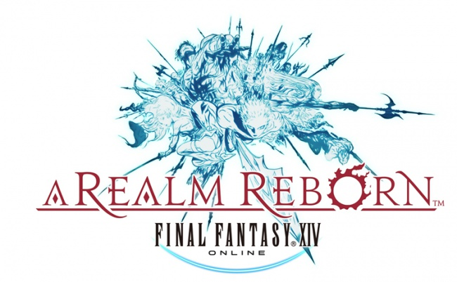

Länk till officiella hemsidan: Final Fantasy 14
Soundtrack


Trailer till spelet
Länk till officiella hemsidan: Final Fantasy 14
Soundtrack
Fakta:
Final Fantasy XIV som även kallas Final Fantasy XIV Online och är ett MMORPG (Massive Multiplayer Online Role Playing Game) och är den fjortonde delen i Final Fantasy - sagan. Spelet släpptes 2010 för WIndows och var tänkt att släppas 2011 till Playstation 3. Men efter ett mindre lyckat släpp och knappt någon spelarbas bestämde de sig för att göra om spelet och kallade det Final Fantasy XIV Online A Realm Reborn och släpptes i augusti 2013 till både Windows och Playstation 3.
Stridssystem:
Stridssystemet är väldigt likt andra MMORPG där man går ut och dödar fiender och gör uppdrag med olika attacker. Dessa gör man för att gå upp i level för att lära sig mer attacker och bli starkare och kan ha bättre utrustning. Denn maximala leveln som man kan uppnå just nu är level 50. Spelet har olika klasser som har olika egenskaper som magiker som använder magier och gladiator som använder skäld för att skydda sig.
Dungeons:
I spelet finns så kallade dungeons som man kan göra för att få Experience Points eller för att fortsätta med historien. Dessa dungeons gör man genom att vara fyra stycken i ett party, en tank, en healer och två dps och tankens uppgift är att hålla alla fiender på sig så att de inte går och slår på de andra i partyt. Heaalerns uppgift är att hålla alla vid liv och dpsen ska bara döda fienderna. I dessa dungeons finns också olika bossar man måste döda för att klara dungeonen och dessa bossar gör olika saker som man måste akta sig för eller döda extra fiender utöver bossen.